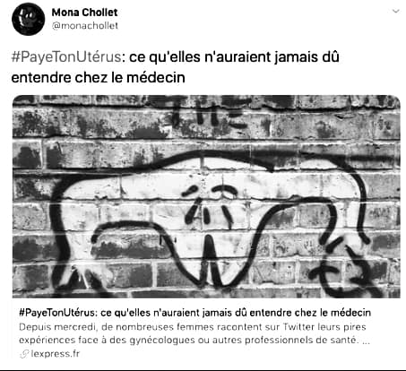

Avant même que #MeTooL’origine de #MeToo remonte à 2007, quand l’activiste new-yorkaise Tarana Burke lance une campagne de soutien aux victimes d’agressions sexuelles dans les quartiers défavorisés. ne se diffuse dans le monde entier à la suite de l’affaire Harvey Weinstein en 2017, un autre mouvement, #PaieTonUterus, a libéré la parole des femmes victimes de violences, en l’espèce gynécologiques et obstétricales. Lancé sur Twitter par une étudiante en pharmacie en novembre 2014, il a recueilli plus de 700 témoignages de femmes en 24 heures, notamment sur leurs expériences d’accouchement.

#PayeTonUterus, compte Twitter de Mona Chollet.
Des actes médicaux non consentis étaient dénoncés, y compris ceux qui, comme l’analgésie péridurale, furent jadis encouragés par des féministes qui y voyaient le moyen de se libérer des risques et des douleurs de l’accouchement. À la suite de #Paie-TonUterus, un rapportDanielle Bousquet, Geneviève Couraud et Margaux Collet, Les Actes sexistes durant le suivi gynécologique. Des remarques aux violences, la nécessité de reconnaître, prévenir et condamner le sexisme, rapport public, Paris, Haut Conseil à l’égalité, 2018. a été commandé au Haut Conseil à l’égalité entre les femmes et les hommes pour « objectiver le phénomène » par la ministre en charge de l’Égalité, Marlène Schiappa, elle-même marquée par un « accouchement boucherie ». Ce rapport, pour la première fois et à la colère de nombre de praticien·ne·s, a identifié six types d’actes sexistes durant le suivi gynécologique et obstétrical, et formulé des recommandations pour les reconnaître, les prévenir et les condamner.
Hôpital de la Pitié-Salpêtrière, Paris. Photo : Mbzt (2011), CC BY-SA 3.0.
La première analgésie péridurale française a été pratiquée en 1974 à l’hôpital parisien de la Pitié-Salpêtrière par Jeanne Seebacher, docteure et militante au Parti communiste français. Devenue aujourd’hui la norme, c’est en France qu’elle est la plus fréquente : selon les chiffres de l’InsermLaure Kpéa et al., « Initial Preference for Labor Without Neuraxial Analgesia and Actual Use : Results from a National Survey in France », Anesthesia & Analgesia, 121 (3), 2015, p. 759-766., 77 % des femmes accouchant par voie basse étaient concernées en 2010 contre 15 % seulement aux Pays-BasIl existe cependant peu de données comparatives.. Ce triomphe n’était pas gagné d’avance. Si la Pitié-Salpêtrière a été décrite comme le « temple de
l’anesthésie périduraleHélène Cardin, Marie-Thérèse Moisson-Tardieu et Michel Tournaire, La Péridurale. La douleur de l’accouchement vaincue, Paris, Balland, 1986. » par ses confrères, l’anesthésiste Jeanne Seebacher, elle-même surnommée « la carmélite de la salle de travail » par ses supérieurs, se souvient que la « moitié des patrons d’obstétriques parisiensPaul Benkimoun, « Jeanne Seebacher. Médecin engagée, elle fut la pionnière de l’anesthésie péridurale pour les accouchements », Le Monde, 29 juillet 2006. » ont « écrit des articles contre la péridurale » durant les années 1970. Pour des professeur·e·s et des chef·fe·s de clinique issu·e·s de la bourgeoisie, la promotion de ce nouveau « progrès technique » – à la suite de la psychoprophylaxie obstétricale introduite en France par le docteur LamazeMarianne Caron-Leulliez et Jocelyne George, L’accouchement sans douleur. Histoire d’une révolution oubliée, Paris, Éditions ouvrières, 2004. et dénommée « accouchement sans douleur » – n’allait pas de soi. Pour beaucoup d’entre elles et eux, la douleur, conformément à une prophétie biblique, faisait tout simplement partie de l’accouchement.
Rétrospectivement, il semble que ce soit grâce à une autre femme – ou à cause de, selon la perspective que l’on adopte –, Simone Veil, ministre des Affaires sociales, de la Santé et de la Ville de 1993 à 1995, que la pratique s’est banalisée en France. En 1981, en dehors de la Pitié-Salpêtrière, la proportion de femmes ayant recours à la péridurale était de 3,9 % seulementJean-Yves Nau, « Péridurale : un accouchement enfantin… », Le Monde, 15 janvier 1986.. Ce n’est qu’une fois son remboursement par la Sécurité sociale étendu en 1994Voir le discours de Simone Veil prononcé le 12 avril 1994. à toutes les femmes le souhaitant, sans condition d’indication médicale, que l’usage de la pratique a grimpé de manière spectaculaire : à 48 % en 1995 et 77 % en 2010Anne-Aël Durand, « Accoucher avec ou sans péridurale ? Naissance d’un débat », Le Monde, 30 août 2017..
Simone Veil a ainsi répondu aux demandes de médecins anesthésistes engagé·e·s. Ces dernier·e·s réclamaient, à la suite de Jeanne Seebacher, de mettre fin à la « discrimination intolérableJean-Yves Nau, art. cité. » de la Sécurité sociale qui ne remboursait pas la péridurale comme « anesthésie générale en obstétrique lorsqu’elle est présentée comme remède aux douleurs de l’accouchement », alors qu’elle était « reconnue comme mode d’anesthésie parfaitement valable pour les autres disciplines chirurgicales ». Ces médecins n’ont-ils pas obtenu la démocratisation d’une technique permettant aux femmes qui le souhaitent d’avoir enfin le choix d’accoucher sans douleur ? Mais alors, comment comprendre, trente ans plus tard quand elle est devenue presque systématique, sa condamnation comme un acte pratiqué sans consentement ?
La sociologie des sciences et techniques nous éclaire ici en s’écartant d’un discours consumériste articulé autour du « choix » des femmes et qui, en réalité, est avant tout propagé par l’institution hospitalière. En enquêtant sur les expériences réelles des femmes avant et après l’accouchement, Madeleine AkrichMadeleine Akrich, « La péridurale, un choix douloureux », Cahiers du Genre, 1999, p. 17-48., professeure de sociologie à l’École des mines, a montré ce qu’elle appelle la « fragilité de choix » sur le terrain, autrement dit les limites complexes d’un consentement libre. Soumises à une série de contingences, de l’autorité du corps médical aux gestes enchaînés – l’analgésie péridurale entraîne souvent les déclenchements qui, à leur tour, entraînent la pose de perfusion d’ocytocine – jusqu’à la remise en cause de leur expertise, les parturientes sont indolorisées et dépendantes de l’expertise médico-scientifique. Les travaux d’Akrich ont aussi mis en lumière à quel point ce qui a été présenté comme une technique de soulagement et de libération au service des patientes était tout autant une technique au service de l’institution hospitalière elle-même, une sage-femme expliquant avec une certaine gêne à la chercheuse que « la péridurale, c’est un confort pour nous, celles qui n’en veulent pas, elles doivent se débrouiller toutes seules ».
Ainsi, à la suite d’un échange avec une patiente qui hésitait à accepter le déclenchement de son accouchement, lui demandant quels en étaient les avantages et s’inquiétant de la dangerosité du procédé pour le bébé, un médecin chef de service dans une maternité fit à une autre sociologue connue pour avoir étudié ce champ, Danièle Carricaburu, l’aveu suivant :
Il faut quand même que je sois honnête avec vous… c’est vrai que la programmation de l’accouchement, c’est aussi pour optimiser les moyens […] et je dirais presque, que c’est pas l’obstétrique et pas tellement la pédiatrie qui justifient ça, c’est plus pour l’anesthésie… parce que les anesthésistes, ils vont vous dire « écoutez-nous, le lendemain on travaille, on fait un programme opératoire toute la journée, on va pas se lever trois fois par nuit », moi, je les comprends… Alors si on veut pouvoir offrir des péri’ à tout le monde, programmer les accouchements, c’est un bon moyenDanièle Carricaburu, « De la gestion technique du risque à celle du travail : l’accouchement en hôpital public », Sociologie du travail, 47 (2), 2005, p. 245-262..
C’est pourquoi Danièle Carricaburu affirme que le recours massif à la péridurale ne peut s’expliquer uniquement ni par la réceptivité du corps médical à une demande sociale, ni par la simple « optimisationIbid. » du fonctionnement de l’institution hospitalière. L’accouchement étant historiquement conçu comme une situation à risque vital en France, la réforme de la périnatalité de 1998, qui oriente les femmes selon le niveau de risque attribué à leurs grossesses par le corps médical, aurait encore renforcé la « rationalisation par logique probabiliste ». Car, de ce point de vue, l’analgésie péridurale devient aussi un « outil de prévention de risques de l’accouchement » qui en appelle d’autres, comme l’extraction de l’enfant par forceps.
Plus récemment, la chercheuse de l’EHESS Maud Arnal, aussi sage-femme à la maternité des Lilas, un service réputé pour sa prise en charge alternative de l’accouchementLes pratiques alternatives ne sont pas nouvelles : outre les techniques dites de psychoprophylaxie évoquées plus haut, les docteurs Michel Odent et Max Ploquin ont développé durant les années 1970-1980 des pratiques d’accouchement sans douleur et sans surmédicalisation, mais ont ensuite été marginalisés., s’est intéressée à la place du choix supposé des femmes dans leur gestion des douleurs de la mise au monde. Pour elle, il s’agit non seulement d’une question de santé publique – plus que de choix individuel –, mais également d’un enjeu de sexe et de genre : les cris et la douleur font peur aux maris et aux professionnels, et la péridurale répond à l’injonction que pour être bonne mère, il faut rester douce et tranquilleMaud Arnal, « Les douleurs de la mise au monde : un enjeu de santé publique au prisme des rapports sociaux de sexe. Analyse des normes médicales et sociales des douleurs des femmes en couche », thèse de doctorat, Paris, EHESS, thèse en cours..
On comprend ainsi mieux le retournement actuel condamnant l’absence de consentement lors de la pose de l’analgésie péridurale – et toutes les pratiques qui vont souvent de pair. Les « progrès » réalisés « au nom des patientes et futures mères », d’abord au service de la maternité de la Pitié-Salpêtrière, ensuite généralisés à tous les hôpitaux de France, ont souvent été réalisés sans demander l’avis des principales concernées. Ainsi, l’accouchement demeure-t-il, pour beaucoup de femmes, une scène d’épreuve, quoique d’une autre nature.
Inès Mosgalik
Inès Mosgalik est docteure en histoire et chercheuse associée au médialab de Sciences Po.
Bibliographie
AKRICH Madeleine, « La péridurale, un choix douloureux », Cahiers du Genre, 1999, p. 17-48.
ARNAL Maud, « Les douleurs de la mise au monde : un enjeu de santé publique au prisme des rapports sociaux de sexe. Analyse des normes médicales et sociales des douleurs des femmes en couche », thèse de doctorat, Paris, EHESS, thèse en cours.
CARDIN Hélène, MOISSON-TARDIEU Marie-Thérèse et TOURNAIRE Michel, La Péridurale. La douleur de l’accouchement vaincue, Paris, Balland, 1986.
CARRICABURU Danièle, « De la gestion technique du risque à celle du travail : l’accouchement en hôpital public », Sociologie du travail, 47 (2), 2005, p. 245-262.
LIOTARD-SCHNEIDER Frédérique, « Les experts de l’intime et les femmes, médecins et démographes en France de 1945 à 1975 », thèse de doctorat, Nanterre, Université Paris Nanterre, 2010.